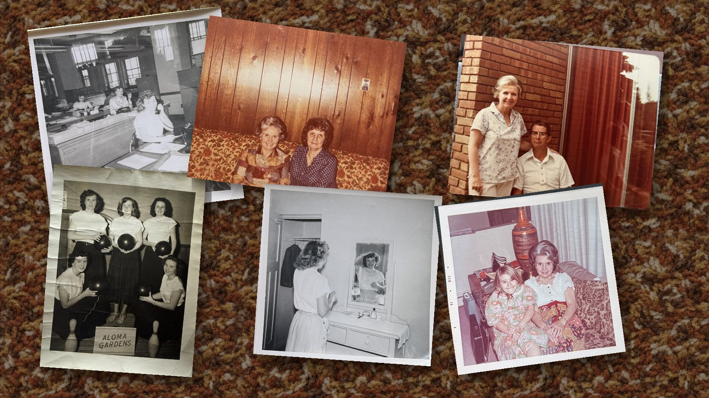
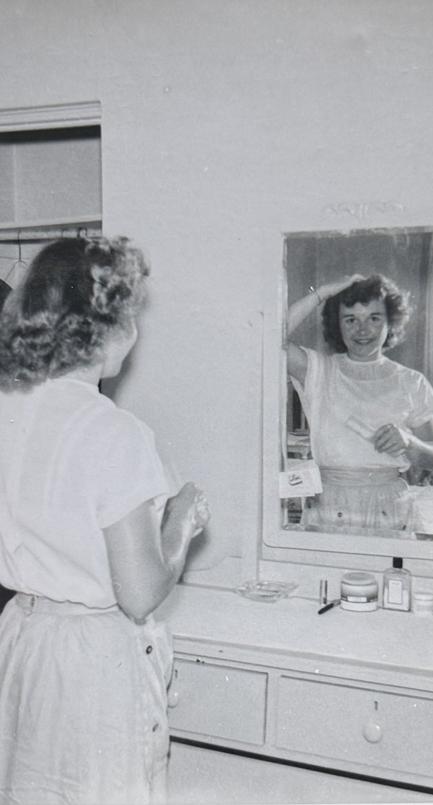

Betty turned 100. Her stories deserved more than a phone recording.
The starting point wasn’t a feature idea. It was a moment with my grandmother.

Betty turned 100 on August 27, 2026. She loves to talk and tell stories, but she lives at home with full-time caretakers. I had moved to New Zealand, and I felt the distance — and the fact that she didn’t get as many visitors as she deserved.
I had recordings of our conversations on my iPhone, but they were scattered and difficult for the rest of the family to revisit. I wanted a way to make those stories easier to keep, share and return to.
For her birthday, we started going through boxes of old photographs. We didn’t get very far through the boxes. But something else happened: the pictures brought the stories back.
The photograph wasn’t just an artifact to preserve. It was the beginning of the conversation.
The moment that changed the brief
A black-and-white prom photograph led Betty to describe the black-and-pink dress she wore. The image unlocked a specific memory without asking her to search for an answer or work through a list of prompts.
That became the product insight: start with something familiar and meaningful, then let the person’s own memory lead.
